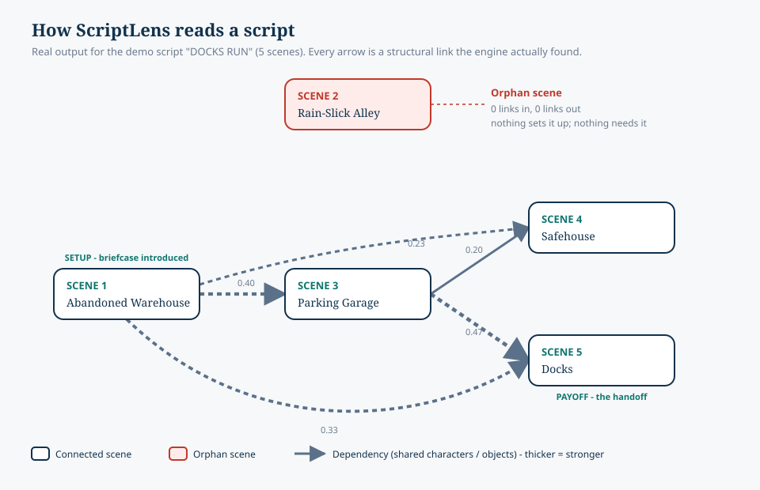

INT. SOUNDSTAGE — NIGHTEXT. RED CARPET — EVENINGINT. EDIT BAY — CONTINUOUSEXT. STUDIO LOT — DAWNINT. WRITERS’ ROOM — DAYEXT. THEATER MARQUEE — NIGHTINT. PROJECTION BOOTH — NIGHTEXT. HOLLYWOOD HILLS — DUSKINT. SCREENING ROOM — LATEREXT. BACKLOT — CONTINUOUSINT. DRESSING ROOM — NIGHTFADE IN:CUT TO:INT. ORPHAN SCENE — ???EXT. AWARDS BALCONY — NIGHT
Early access
ScriptLens
Structural editing for screenplays — spot orphan scenes and preview cut
impact before you change the draft.
Find scenes that don’t connect to the story
Simulate a cut and see what breaks
Keep your original script intact while you explore edits
Please enter a valid email and try again.
Building in public. We’ll email you when there’s something to try — no spam.
How it works
What ScriptLens actually does
It reads your screenplay as a graph of scenes. Two scenes are linked when
they share characters, locations, or objects. From that graph it finds
scenes that connect to nothing, and shows what breaks if you cut a scene —
before you change a word of the draft.

Real engine output for a five-scene demo. Scene 2 links to nothing —
an orphan. Cut Scene 1 and its briefcase setup, and Scenes 3–5 lose
their payoff.
What it does
Finds scenes structurally disconnected from your story
Shows what breaks if you cut a scene
Previews an edit’s ripple without touching your draft
What it doesn’t do
Fix grammar or spelling
Give notes on dialogue, or judge if the story is good